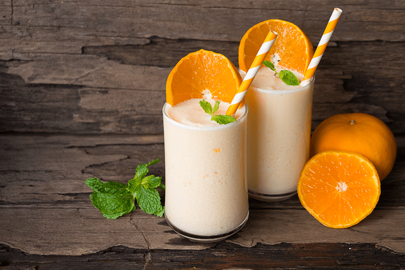

Orange Julius Creamsicle Drink
– raw, vegan, gluten-free, nut-free –
If you are seeking the classic taste of an Orange Julius… look no further. Cold… Frothy… Inexplicable! Here is a summertime drink brought to perfection.

When I was fourteen years old, I started my first job working at the Pretzel Factory. At the time, It was nestled in the south end of our local mall. I made and served fresh pretzels, cookies, and soft drinks. It wasn’t a bad gig, but the mall didn’t bring in much traffic, especially during my shift, which was from 2 pm to 9 pm. So after all my duties were completed, I sat on the stool behind the soda machine and did my school work (I homeschooled myself once I hit fourteen).
The mall was about as silent as a church mouse. Even back then, the mega malls were slowing dying, giving away to the big box stores. But for me, as I was blossoming into a young teenager… being paid to hang out in the mall was the perfect adolescent rite of passage. It was a social gathering point, and a place to hopefully stay out of trouble. Nowadays we mostly read about their demise, and the closing of the local mall represents a sense of loss of community. Trust me; there wasn’t anywhere else to hang out in the little town of Wasilla, Alaska.
Anyway, back to the story… At the complete opposite end of the mall was a grocery store. Thank goodness for the business that they generated. Otherwise, I am not sure we would have had any foot traffic at all. Often, a grocery shopper would push their grocery buggy through the mall, to my end to buy a pretzel get to where they parked. The flooring of the mall was a ceramic, cobblestone-like floor and as they pushed their way through the mall, the wheels made that “click click click click” sound. With the vast size of the mall and the lack of hustle and bustle of shoppers, the sound would echo through the corridors.
I could count how many cobblestones they passed over, and if I wasn’t careful, this would distract me from my schooling, I mean work. Haha Day in, day out, this was my life.
About once a week I would get a special visitor that would help break the boredom… my grandma. She was/is a tiny thing, but regardless of her size, she could pack away a large tray of nachos from Orange Julius. This was her favorite snack when she came to visit me. With nachos in one hand (for herself) and an Orange Julius in the other (for me)… she would come by to check in on me. So as you might guess, this drink holds some special memories for me. Nothing like taking a slurp from a straw and being transported back in time. Well, I will let you go. I hope you enjoy the recipe. Please let me know what you think. Blessings, amie sue
 Ingredients:
Ingredients:
Yields 2 1/2 cups
- 1 1/2 cup orange juice
- 1 cup raw Tiger milk
- 1 1/2 cups (278 g) Young Thai coconut meat/flesh
- 3 Tbsp raw honey or maple syrup
- 1/4 tsp orange extract or 2 drops Living Young essential oil
- 1/2 tsp vanilla extract
- Place the orange juice, tiger milk, coconut meat, sweetener, orange oil and vanilla extract in the blender. Blend until creamy smooth.
- Feel free to use coconut milk, almond or cashew milk in place of the tiger nut milk. My goal was to create a nut-free drink for myself.
- Pour into a beautiful glass, slip in a straw, sit back and enjoy the cool, refreshing effects of the Orange Julius Creamsicle Drink.
© AmieSue.com